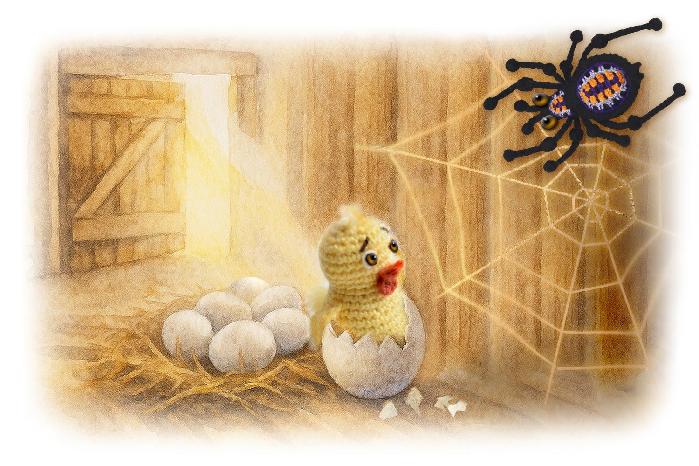
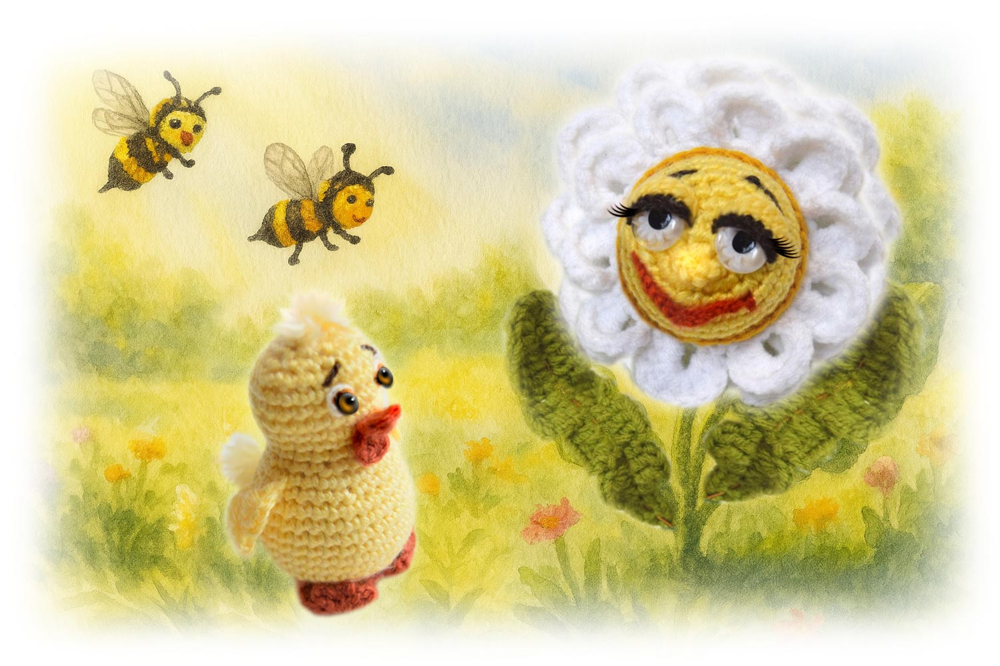
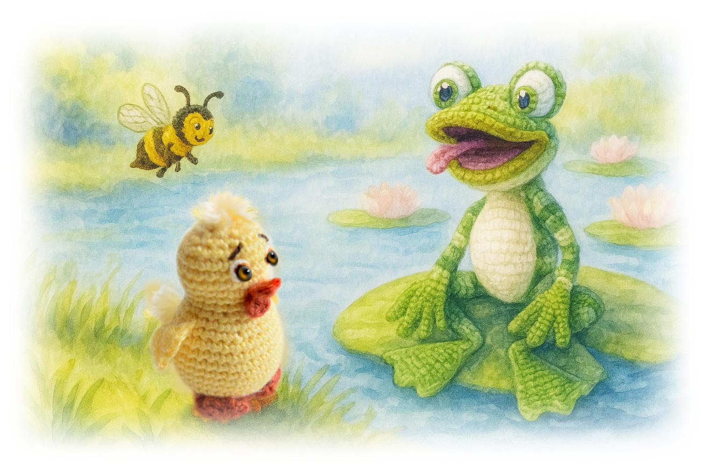
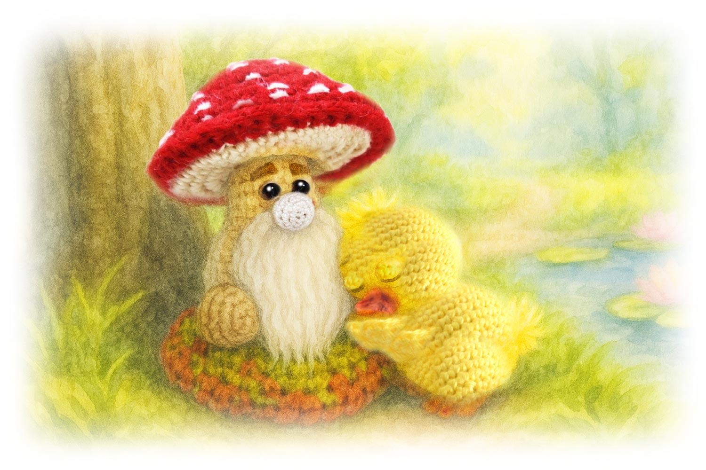
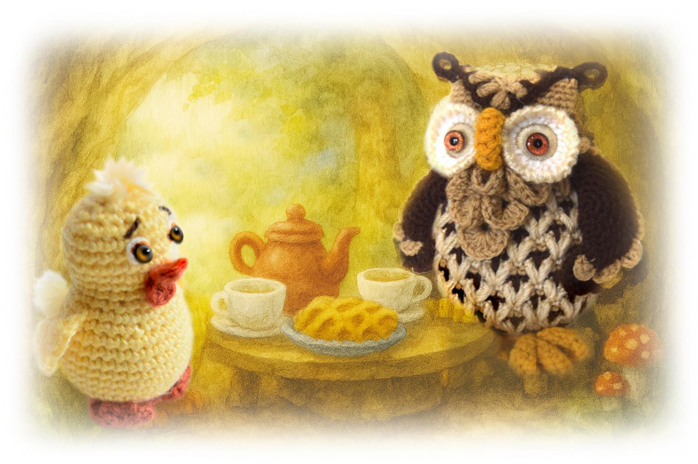
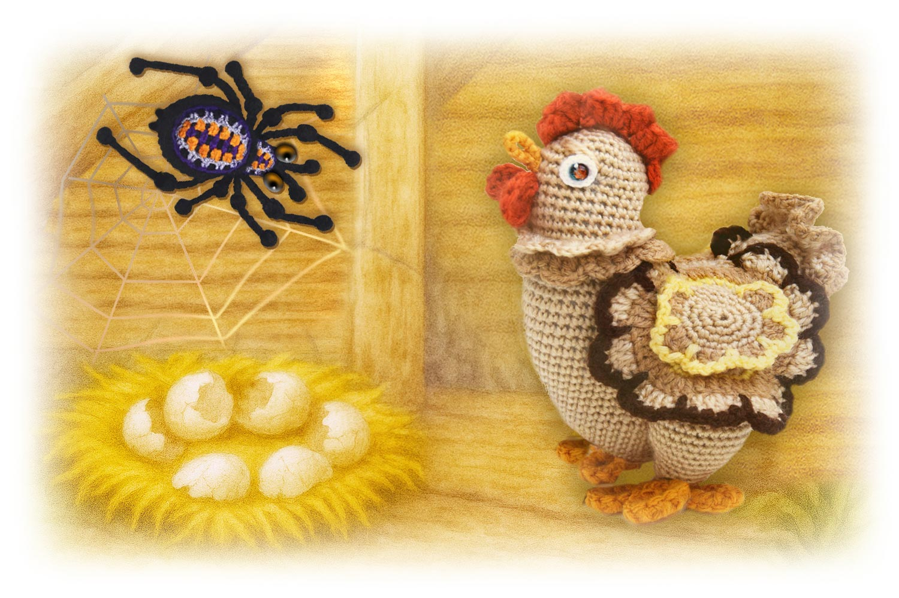
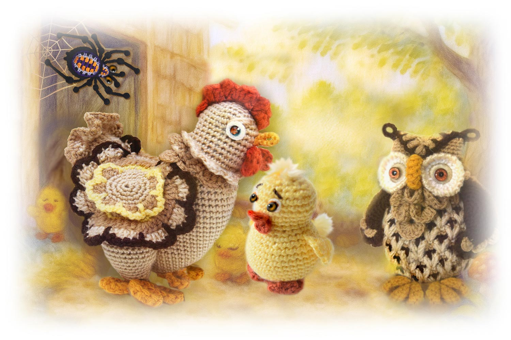

Сказки кота Филомура
бережно записанные его давним поклонником — крысом Мышелем

🐣 Приключения цыплёнка Пипа
Глава 1 | Глава 2 | Глава 3 | Глава 4 | Глава 5 | Глава 6 | Глава 7
Глава 1. Первая встреча
Однажды, в тёплый и солнечный весенний день, в углу старого сарая под покосившимся табуретом раздался тихий звук: тук-тук-тук. Скорлупа треснула.
Маленький жёлтый цыплёнок сначала высунул клювик, потом головку, потом лапку. Он глубоко вдохнул запах сена и пискнул изо всех сил:
— Пи-пи-пи!
Скорлупа развалилась, и он выбрался наружу — мокрый, дрожащий, но полный любопытства. Он огляделся и заметил, что за ним внимательно наблюдают два янтарных глаза из-за густой паутины в дальнем углу.
— Мама? Здравствуй, мама! — пискнул он радостно.
Паук Борис нахмурился. Он надеялся провести тихий день в своём сарае, мечтал о сытном обеде — жирной мухе, попавшейся в паутину. Шум и суета ему были ни к чему.
— Эээ… малыш, ты ошибся. Я не твоя мама. Я паук. Но всё равно — добро пожаловать в этот мир.
Цыплёнок моргнул, стряхнул с себя скорлупки и капельки и, немного смутившись, спросил:
— А где же моя мама?
— Не знаю, — ответил Борис. — Она была здесь недавно, но, похоже, ушла. Наверное, на птичьем дворе — кудахчет с другими курами.
— Но я только родился… Мне очень нужна мама, — жалобно сказал цыплёнок.
Борис недовольно повёл лапкой.
«Ну вот… Эта болтливая Варя, наверное, решила, что я буду нянчить её цыплят? Ха!»
— Извини, малыш, ничем помочь не могу. У меня дела, — сказал он и уполз в темноту.
На самом деле никакой срочной работы у него не было. Но Борису было неудобно признаваться, что он просто не умеет разговаривать с детьми. В глубине души этот пушистый комочек его тронул, и он не хотел показаться грубым. А ещё он помнил, как однажды Варя склевала его кузена Джо… Да, Джо был тот ещё тип, но всё равно — неприятно.
Цыплёнок тем временем наблюдал за солнечным зайчиком на стене и лучами, пробивавшимися сквозь щель в двери. Он посмотрел на Бориса, потом на свет — и понял, что ему нужно идти туда, где тепло и ярко.
— Спасибо! — пискнул он и, шатаясь на тоненьких лапках, побежал к двери.
Сарай был тёмный и прохладный, а за дверью — чудо! Солнце! Цветы! Деревья! Всё блестело, шевелилось и пахло весной. Пип замер на пороге, расправил крылышки, и его пушистые пёрышки начали быстро сохнуть в тёплых лучах.
— Ух ты… — восхищённо прошептал он. — Как красиво!
Он посмотрел на небо и подумал:
— Может, это и есть моя мама? Большая, яркая, тёплая…
И сделал первый шаг по мягкой траве. Потом второй. А потом побежал, весело подпрыгивая, навстречу солнцу, навстречу приключениям — и, конечно, навстречу маме.
А паук Борис остался в своём углу, покачиваясь на паутинке и тихо бурча:
— Шустрый… убежал. Ну ладно. Пусть себе бежит. Главное — чтобы не заблудился.

🌼 Глава 2. Цыплёнок и ромашка Рита
Цыплёнок весело бежал по лесной дорожке, шлёпая по травке своими крошечными лапками. Он только что вылупился, и всё вокруг было новым, ярким и удивительным! Солнышко то выглядывало, то пряталось за облачко, а Пип старался догнать его, думая, что оно может быть его мамой.
Но вдруг — прямо перед ним — появился белоснежный цветок с яркой жёлтой серединкой, почти как его собственная головка.
— Ой! — пискнул Пип. — Может, это моя мама?
Он подошёл поближе, задрал носик и вежливо спросил:
— Здравствуй! А ты случайно не моя мама?
Цветок слегка покачнулся на ветру и звонко рассмеялся:
— Ах ты, милый малыш! Конечно же нет. Я ещё слишком молода, чтобы иметь детей. Мне ещё цвести и цвести! У цветов дети появляются, когда мы увядаем — тогда ветер уносит наши семена. А я пока в самом расцвете! Посмотри, какая я свежая, белоснежная, с идеальной серединкой!
Она кокетливо поправила лепесток и добавила:
— Меня зовут ромашка Рита. И, между прочим, я очень красивая. Правда?
Цыплёнок заморгал:
— Да… вы действительно очень красивы. Простите, я просто… я ищу свою маму.
— Ну, ты точно не цветок, — сказала Рита. — Ты — цыплёнок. А твоя мама — курица. Разве ты не знал?
Пип задумался. Он не знал. Он только-только вылупился! Он почесал крылышком за ушком и пропищал:
— Пи-пи-пи…
— Пип! Какое чудное имя! Цыплёнок Пип! Очень приятно познакомиться, — сказала Рита. — Ты знаешь, у меня много поклонников. Все восхищаются моей красотой и влюбляются в меня с первого взгляда!
Цыплёнок Пип не совсем понял, что значит «поклонники», но вежливо кивнул.
— Когда ты подрастёшь, может быть, тоже станешь моим обожателем, — продолжала Рита. — Но пока ты совсем малыш. И, честно говоря, тебе не стоит бродить одному так далеко от дома.
— Да, вы правы, мадам, — сказал Пип, принимая своё имя с гордостью.
— Ой, посмотри, Пип! — вдруг воскликнула Рита. — Вот мои подружки летят — Жужа и Мила! Подожди, я представлю тебя им как моего нового поклонника. Они обрадуются и разнесут эту новость по всему лугу!
Пип растерянно замер, задрав носик к небу.
И тут — жжжжжж! — прилетели две весёлые пчёлки.
— Рита! — закричала Жужа. — Поздравляю! Новый кавалер?
И, не раздумывая, она приземлилась прямо на жёлтую головку Пипа, решив, что это — новый цветок.
— Ой! — пискнул Пип, вздрогнув. Жужа нечаянно его ужалила.
— Ой-ой-ой! Больно! — закричал Пип и, не разбирая дороги, кинулся прочь, хлопая крылышками и путаясь в траве.
А Рита, Мила и Жужа остались на полянке, глядя ему вслед.
— Ну вот, — вздохнула Рита. — Ты опять ужалила моего приятеля. Ты что, завидуешь мне?
Она укоризненно посмотрела на Жужу.
— Ладно… со всеми бывает…

Top of the page🐥💦 Глава 3. Цыплёнок Пип и лягушка Лара
Цыплёнок Пип бежал по тропинке так быстро, что лапки едва успевали за его любопытством. Он оглядывался по сторонам, вспоминал укус пчёлки и думал, что маму найти — дело непростое.
И вдруг — ой! — земля под ногами исчезла, и Пип покатился вниз, как пушистый мячик.
— Плюх! — раздалось громко, и Пип оказался прямо в пруду.
Холодная вода сомкнулась над ним с мягким всплеском. Мир исчез на мгновение.
Потом — воздух, дрожащие капли на ресничках, дыхание.
Он вынырнул, захлопал крылышками, выскочил на берег и начал встряхиваться, как мокрая игрушка.
— Браво! Вот это прыжок! — раздался звонкий смех.
Пип замер.
Кто это?
Он прищурился и увидел на листике кувшинки зелёную лягушку с весёлыми глазами и широкой улыбкой.
— Ты такой забавный! — сказала она. — Кто ты? И что ты забыл в моём пруду?
— Я… я цыплёнок Пип, — тихо пропищал он. — Я ищу свою маму. А в пруд я попал случайно…
— Ну, бывает! — рассмеялась лягушка. — Я Лара. Лягушка Лара! Зачем тебе мама? Давай лучше дружить!
— Дружить? — переспросил Пип. — А что это значит?
— Ну как же ты не знаешь! — Лара подпрыгнула.
— Дружить — это прыгать вместе с кувшинок в воду, пускать брызги, ловить комаров, нырять до самого дна!
Пип замер. Он почувствовал, как холод пробирается под пушистое оперение, а внутри зарождается тревога.
— Ох… — поёжился он. — Я не умею нырять…
Но Лара уже не слушала. Она подпрыгнула так высоко, что казалось — вот-вот улетит, — и с шумом плюхнулась в воду, подняв фонтан брызг.
Пип снова стал мокрым. Он вздрогнул, поёжился и тихо подумал:
— Ну это мне совсем не нравится… Наверное, я не умею дружить…
Он печально вздохнул, повернулся и побрёл прочь от пруда — весь мокрый, продрогший и немного грустный.
А Лара, вынырнув, смотрела ему вслед и кричала:
— Эй, Пип! Ты куда?… Ну вот! И этот убежал! Не везёт мне с друзьями…

🍄 Глава 4. Цыплёнок Пип и мухомор Тимофей
Цыплёнок Пип брёл по лесной дорожке — мокрый, уставший и очень-очень грустный.
Мир, который совсем недавно казался ему ярким и волшебным, вдруг стал большим, шумным и немного страшным. Он шёл медленно, едва волоча лапки, и тихо вздыхал:
— Один я, совсем один… Ни мамы, ни друзей…
Он замёрз, проголодался, устал. Он не знал, куда идти.
И вот, на краю поляны, он увидел большой яркий гриб с красной шляпкой в белых точках — это был мухомор Тимофей.
Пип подполз под его широкую шляпку, свернулся клубочком и тихо-тихо заплакал.
Тихо… так, чтобы никто не услышал. Даже небо.
— Привет, малыш. Что случилось? Почему ты плачешь? — услышал он добрый, спокойный голос.
— Здравствуйте… Пи, пи, пи… Я плачу, потому что жизнь моя не сложилась. Я очень несчастный.
— Это печально. Ты ещё такой маленький. Как такое несчастье могло произойти?
— Я потерялся, меня ужалила пчела, я упал в пруд и чуть не захлебнулся, намок, замёрз, проголодался и заблудился…
Мухомор Тимофей покачал шляпкой и заговорил, будто размышляя вслух:
— Да уж… тебе действительно не повезло. Но это пройдёт. Всё проходит, всё меняется. А потом возвращается снова, на круги своя. В жизни бывают и радости, и печали. Как день и ночь. Если сейчас ночь — то скоро наступит день, а потом снова ночь, и снова день. Что было — то и будет.
— Хотя я и не знаю, чем могу тебе помочь, я твёрдо уверен в одном: не стоит пить настойку мухомора — но стоит изменить своё отношение к обстоятельствам.
Пип слушал внимательно, хотя многое казалось ему непонятным и необычным. Он не знал, что такое «обстоятельства» и «отношение», но чувствовал, что Тимофей говорит о чём-то важном, взрослом.
Это был не просто гриб, а учёно-философский и очень странный — не от мира сего.
— Пи-пи-пи… Простите, но я совсем не понимаю, что это значит… — пропищал Пип.
— Непременно поясню, — воодушевился Тимофей.
— Вот подумай. Ты упал в пруд и намок — но выбрался и скоро высохнешь на солнышке. Это лучше, чем если бы ты угодил в бескрайний океан.
— У тебя нет друзей, но у тебя есть время, чтобы понять, каких друзей ты ищешь и зачем они тебе нужны. Ведь только тогда ты сможешь найти настоящего друга.
— Друг — это не тот, кто просто рядом, а тот, кто знает, понимает и принимает тебя таким, какой ты есть. А чтобы тебя понимали — ты сам должен себя понять.
— Ты говоришь, что у тебя не сложилась жизнь… Ах, и где ты это услышал? Подумай, что бы сказал об этом старичок петух Карл, из которого жена фермера, тётя Поля, вчера сварила суп?
— Тебя ужалила пчела — это больно, но скоро пройдёт. Радуйся, что тебя не съел крокодил.
— Да, малыш, я согласен, быть ужаленным пчелой крайне неприятно. Кстати, у меня имеются весьма широкие познания о пчелином яде.
— Не желаешь ли услышать о его воздействии на местные ткани и на нервную систему? Вот в этом вопросе я специалист.
— Многие считают, что я ядовитый гриб, но это не совсем так. Алкалоиды, которые во мне содержатся, влияют…
— Пи… пи… пи… я маленький, мне нужна мама, я просто ищу мою маму… — Пип не выдержал и жалобно пропищал, перебив Тимофея.
— Браво, малыш! — воскликнул Тимофей.
— Вот теперь позволь мне с тобой не согласиться. Ты редкий счастливец! Ты даже не представляешь, как тебе повезло.
— И это потому, что ты знаешь, кто ты. Более того — ты знаешь, чего ты хочешь. Сколько существ проживают всю жизнь, так этого и не поняв и даже не задавшись этим вопросом. А ты — такой маленький — и уже знаешь. Это великолепно!
— Кстати, ты затронул чрезвычайно важный вопрос. Я размышлял над ним многие дни и с радостью поделюсь с тобой своими умозаключениями о детско-родительской привязанности.
— Конечно, я должен признать, опыта воспитания детей у меня нет, но это не так важно.
— Итак — мама… Да, ребёнку, несомненно, нужна мама — как корень дереву. Без неё трудно расти.
— Каждый малыш нуждается в тепле, заботе и любви. В том, кто обнимет, когда страшно, и подскажет, когда непонятно.
— Материнская любовь — как солнечный луч: она греет, даже если ты один. Как дождик для семени — без него не вырастешь.
— Ты пока не нашёл свою маму, — продолжал мухомор, — однако есть веские основания полагать, что ты её найдёшь.
— Найдёшь потому, что ты знаешь, что ты ищешь. А это — самое главное.
Радуясь, что нашёл собеседника, Тимофей и не собирался останавливаться. Как говорится, вошёл во вкус.
Он говорил тихо, задумчиво, как колыбельная. Его голос был ровный, чуть приглушённый — как шёпот леса на закате.
Пип начал клевать носиком, потом зевнул, свернулся под шляпкой гриба и тихо заснул, убаюканный монотонным бормотанием Тимофея.
Тимофей это заметил, но ничуть не огорчился. Он посмотрел на Пипа и, слегка улыбнувшись, прошептал:
— Ну вот, уснул. Это хорошо. Спи, малыш. Утро вечера мудренее.
— Однако позволь мне всё же изложить несколько важнейших мыслей о концепции любви и счастья…
И он продолжил свой монолог, тихонько бубня себе под нос, как будто вышивал словами невидимую лесную скатерть, где каждая бусинка — это мысль, которую заметит и поймёт тот, кто к этому готов.

🦉🍵 Глава 5. Цыплёнок Пип и Сова София
День тихонько ускользал, прячась в тени старого дуба.
Скоро в лесу послышалось мягкое шуршание крыльев. Прилетела Сова София — мудрая и добрая.
Она была давней приятельницей Тимофея, и он часто советовался с ней — особенно когда дело касалось простых, житейских вопросов, в которых он был не слишком силён.
— День добрый, Тимофей! — сказала София. — Никак ты снова ведёшь беседу сам с собой?
— Милая София, ты как всегда вовремя, — ответил Тимофей. — Посмотри, какой смышлёный малыш пришёл послушать мою речь. Он необычайно мудр для своего возраста.
— И напрасно ты иронизируешь надо мной. Я всего лишь обладаю особенностью — проговаривать свои мысли вслух.
— Ох, какой же он крошечный… — прошептала София, с нежностью глядя на спящего Пипа. — И совсем один. Похоже, он потерялся. Ему нужна мама, а не твои мудрёные рассуждения.
— Несомненно! — согласился Тимофей. — Именно к такому философскому заключению мы пришли совместно.
София бережно взяла малыша под крылышко и перенесла его в своё уютное гнёздышко, спрятанное в дупле старого дуба.
Там пахло сушёными травами, мёдом и… пирожными из сушёных букашек — София пекла их по особому рецепту.
Гнёздышко было настоящим волшебством: мягкие подушки, вязаные коврики, салфетки с совами, занавески из паутинки и даже крошечные тапочки для гостей.
София обожала рукоделие и вязала всё сама — с любовью и терпением.
Пип проснулся, потянулся и удивлённо огляделся.
— Где я?..
— У меня в гостях, малыш, — улыбнулась София. — Я Сова София. А ты, как я слышала, цыплёнок Пип. Хочешь чаю?
— Да… — прошептал Пип. — Спасибо…
Скоро они сидели за маленьким столиком, пили душистый травяной чай и угощались пирожными.
Пип ел осторожно, но с удовольствием — они были вкусные, хоть и немного странные.
— Как же ты оказался один в лесу? — спросила София.
— Я пошёл искать маму и потерялся. И теперь я один, совсем один. У меня нет ни мамы, ни друзей…
— Ну, маму я тебе помогу найти, — сказала София. — Ты цыплёнок, значит, твоя мама — курица. Она живёт на птичьем дворе.
— А вот друзей ты выбираешь сам. Ты знаешь, кто такой настоящий друг?
Пип задумался. Он вспомнил Риту, Жужу, Лару… и тихо покачал головкой.
— Друг… это тот, кто не кусается и не брызгается?
София рассмеялась:
— Ну, это хорошее начало. Но друг — это тот, кто рядом, когда тебе грустно.
— Тот, кто слушает, помогает, не смеётся над тобой, а смеётся вместе с тобой.
— Тот, кто не бросает, даже если ты мокрый, испуганный или не умеешь нырять.
— А как становятся друзьями? — спросил Пип.
— Сначала знакомятся, — сказала София.
— Потом узнают друг друга.
— А потом — выбирают.
— Выбирают тех, кто тебе понятен, кто тебе близок, кому ты доверяешь, с кем тебе хорошо.
— Но главное — это твоя готовность быть рядом, помогать, заботиться, делиться и делать для друга всё то, что ты хотел бы, чтобы он делал для тебя.
— И если ты умеешь быть другом — ты обязательно найдёшь тех, кто станет твоими друзьями.
Пип слушал, широко раскрыв глазки. Он чувствовал: эти слова — важные.
Они были как пирожные — сначала странные, а потом вкусные и нужные.
— Спасибо, София, — сказал он. — Я хочу найти маму. А ещё — научиться быть хорошим другом и найти настоящих друзей.
София обняла его крылом:
— Ты уже на правильном пути, малыш.
— А теперь — пора домой. Я покажу тебе дорогу на птичий двор.

🐔💔 Глава 6. Переполох на птичьем дворе
На птичьем дворе было солнечно и оживлённо — жизнь шла своим чередом.
В сарае, среди соломы и скорлупок, вылупились шесть пушистых, весёлых цыплят.
Шесть жёлтеньких пищащих комочков тянули клювики к маме-курице.
Варя, хоть и болтушка, хоть и немного легкомысленная, была счастлива — её малыши пищали, бегали, клевали зёрнышки и смешно падали на бок.
— Ой, какая радость! — кудахтала она. — Мои дорогие, долгожданные детки! Какие лапочки! Вот это я молодец!
Осторожно она забралась в гнездо и накрыла цыплят крылышками.
Но вдруг замерла.
Тревога закралась в её сердце. Она сосчитала скорлупки — их было семь. А цыплят всего шесть.
— Один… два… три… четыре… пять… шесть…
— А где седьмой?! Один пропал!!!
Варя закудахтала тревожно и бросилась бегать по сараю, заглядывая в каждую щель.
За ней послушно следовал выводок из шести цыплят. Почувствовав тревогу в голосе мамы, они тоже испугались.
— Ко-кококо-ко! — кричала Варя. — Мой малыш! Ты где? Отзовись!
Куры, столпившиеся у кормушки, переглянулись.
— Опять Варя кудахчет, — сказала одна. — Целых шесть высидела, и всё ей мало.
— Похоже, одного потеряла, — добавила другая. — Болтает больше, чем высиживает.
Варя их не слышала. Она металась по двору, заглядывала под коряги, в кормушки, даже в ведро с водой.
Наконец она вбежала в сарай, где в углу, как всегда, сидел паук Борис, перебирая паутинку.
— Борис! — закричала Варя. — Мой малыш пропал! Ты его не видел?
— Откуда мне знать? — буркнул Борис. — Я не нянька твоим цыплятам. У меня своих дел полно.
— Но он ведь вылупился?
— Вылупился.
— А ты где была? Болтала на птичьем дворе? Я тебе говорил: сиди в гнезде, не бегай, не болтай. А ты всё кудахтала…
— Я только на минутку вышла поклевать зёрнышек…
— Твоя минутка длилась больше часа.
— Радуйся тому, что есть. Шесть — это немало. Столько писка и суеты.
— Но это мой ребёнок! — закричала Варя. — Он потерялся! Он может быть в опасности! Я должна его найти! Я его люблю!
— А ты его разлюби.
— Это невозможно! Я не могу! Ты ничего не понимаешь в любви!
— Как это не понимаю? — хмыкнул Борис. — Я очень люблю мух. Особенно жирных — с кетчупом.
— Мы говорим о разной любви! — всхлипнула Варя. — Я люблю его, потому что хочу заботиться, оберегать…
— Если бы хотела — не потеряла бы.
— Тебя просто волнует, что другие куры подумают, будто ты плохая мать.
— Ты ничего не понимаешь о материнской любви! — зарыдала Варя.
— Его могла унести лиса… или хищная птица…
— Да, ты прав. Я плохая мать…
Она опустила голову. Борис был резок, но она знала — он прав. И ей было больно. Очень больно.
— Ты жестокий, Борис…
Паук не любил Варю. Но, глядя на её слёзы, на отчаяние и страх в глазах, он сжалился.
— Ну не плачь. Никакая лиса его не съела.
Он вздохнул, спустился по паутинке и посмотрел ей в глаза.
— Ладно. Не паникуй. Он вылупился благополучно. Я видел.
— Побежал по дорожке — туда, на солнечную поляну. Искать тебя.
— Искать меня?.. — прошептала Варя. — Он совсем один…
— Он смышлёный, добрый.
— И даже похож на тебя. Только разумнее. И меньше болтает.
Варя улыбнулась сквозь слёзы.
— Спасибо, Борис…
Она хотела было расцеловать его, но он поспешно спрятался в щель, опасаясь быть склеванным.
А куры у кормушки продолжали перешёптываться:
— Потеряла малыша. Позор. Нерадивая мамаша.
— Да уж, не пример для нас.
А в стороне, у пруда, стояла гусыня Клара.
Она молча подошла к Варе, положила крыло ей на плечо и тихо сказала:
— Я понимаю тебя.
— Я тоже когда-то потеряла своего гусёнка.
— Я была молодой и неопытной. Его унесла хищная птица.
— Я пыталась его спасти… но не смогла.
Варя замерла. Впервые она увидела в глазах Клары не странность, а боль. Настоящую, глубокую.
— Спасибо, Клара, — прошептала она.
— Я найду его. Я должна.
— Я верю — он жив. Он вернётся.
Они обнялись и заплакали.
Горько, но вместе.
— Ты нужна своим цыплятам, — сказала Клара.
— И главное — у тебя есть надежда. Не теряй её.

🐣🌞 Глава 7. Возвращение Пипа
Сова София, расправив крылья, осторожно несла цыплёнка Пипа над лесом.
Он сидел у неё на спине, держался за мягкие перья и смотрел вниз — на дорожки, поляны, пруд, знакомые места, где он уже побывал.
Но теперь он не боялся.
Он знал — его ждут.
— Почти прилетели, малыш, — сказала София. — Птичий двор уже близко.
На дворе было оживлённо.
Курица Варя всё ещё бегала взад-вперёд, кудахтала, заглядывала под кусты, в кормушки, даже в старую лейку.
— Ко-кококо-ко! — причитала она. — Малыш мой дорогой! Где ты?!
Гусыня Клара стояла рядом — молча, но с тревогой в глазах.
Она знала, каково это — ждать и бояться.
И вдруг — тень над двором, мягкий взмах крыльев, и Сова София плавно приземлилась прямо перед Варей.
На её спине сидел Пип — немного взъерошенный, но сияющий от счастья.
— Принимайте гостей! — звонко сказала София.
— Ну вот, Пип, ты дома! А вот и твоя мама!
— Мама! — пискнул он. — Это я, твой сынок Пип!
— Сыночек! — закричала Варя и бросилась к нему.
Она обняла его крыльями, прижала к себе, целуя в макушку.
— Мой малыш! Мой первый! Мой смышлёный, мой храбрый Пип!
София улыбнулась, поправила очки и сказала:
— Он очень старался. И многое понял.
— Вырастет — будет мудрее всех.
Клара подошла, обняла Пипа своим большим крылом и тихо сказала:
— Ты вернулся.
— А значит — всё будет хорошо.
Они втроём — Варя, Клара и София — обнимали Пипа, умилялись его смелости и рассудительности и даже немного плакали от счастья.
А Пип смотрел на них и думал:
— Вот они. Настоящие друзья.
— И мама.
— Самая лучшая мама.
Вскоре подбежали его братики и сестрички — шесть пушистых комочков, весёлых и любопытных.
— Пип! Пип! Где ты был? Что ты видел?
— Я искал маму, — сказал он.
— И нашёл.
— А ещё — друзей.
И они все вместе побежали играть по двору, весело пища, прыгая через травинки и гоняясь за солнечными зайчиками.
А Сова София, сидя на ветке, смотрела на них и тихо шептала:
— Когда сердце открыто — дорога всегда найдётся.


🌟 Вопросы и задания для юного читателя
1. О чём эта глава? Перескажи историю в 3–5 предложениях.
2. Кто главный герой этой главы? Опиши его: внешность, характер и настроение.
3. Если бы ты мог задать главному герою один вопрос, каким бы он был? Запиши его — и попробуй ответить на него от имени героя.
4. Какой выбор сделал кто-то в этой главе? Согласен ли ты с ним? Что бы ты сделал иначе?
5. Найди в главе 5–10 новых слов. Запиши их, узнай их значение и составь по одному предложению с каждым словом.
6. Выбери свою любимую фразу или момент. Почему он тебе запомнился?
7. Придумай короткую дополнительную сцену, которая могла бы произойти дальше. Напиши 3–6 реплик диалога.
8. Придумай новое название для этой главы. Объясни, почему ты его выбрал.
9. Какие чувства вызвала у тебя эта глава? Выбери три слова (например: любопытство, тревога, радость, удивление) и объясни свой выбор.
10. Выбери сцену, которая запомнилась тебе больше всего. Нарисуй её и добавь маленькие детали, которые считаешь важными.